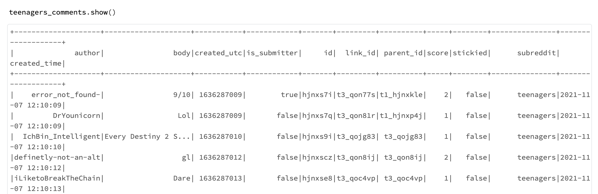
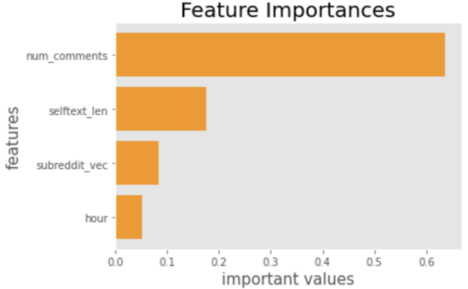

Analyze Reddit data with Azure
6 December 2022
Authors: Zidong Xu|
|
|
Focus on teenager related subbreddits:
- ☕ EDA
- ☕ NLP (NLTK & Spark NLP)
-
☕ Machine Learning Pipelines (Spark ML)
-- Random Forests & Logistic Regression
Project Goals
For our project, we place our interests and efforts on the open-domain chatbots. We expect to build an open-domain chatbot with dramatic responses, which has the ability of 'chatting' with the user in an interesting and interactive way.
Our basic idea is first load the open-source pre-trained models of DialoGPT, which are from microsoft and trained primarily on twits and reddits. Then we finetune the model on the movie dialogue corpus, in the assumption that conversations in movies tend to be more dramatic and emotional, different from common conversations with more apparent features that is easy for us to build models, specifically tweets and reddits. We finally deploy the chatbots using google voice API. More technical details are provided in the following parts.

Tutorial
Exploratory data analysis
After basic data cleaning procedures, such as removing unneeded variables and removing rows with NA, the two datasets we are going to use contain metadata of submissions and comments from subreddits that contains the words teenagers . The submission dataset is a collection of the reddit submissions including 1770430 rows and 11 variables in total, while the comment dataset is a collection of the comments under different posts containing 38152167 rows and 11 variables. Below are some important columns we would like to use later.


This dataset only includes

Text data Preprocessing
a. Regular expressions & NLTK:
# Clean the variable "selftext" of the teenager_submissions table:
Sub_text = teenagers_submissions.select("selftext").toPandas()
Sub_text = Sub_text.sample(frac=0.01, replace=True, random_state=124)
def clean_text(text):
text = text.lower()
text = re.sub(r'[^(a-zA-Z)\s]','', text)
text = re.sub('\[[^]]*\]', '', text)
return text
Sub_text["selftext"] = Sub_text["selftext"].apply(clean_text)
nltk.download("stopwords")
stop = stopwords.words("english")
Sub_text["selftext"] = Sub_text["selftext"].apply(lambda x: ' '.join([word for word in x.split() if word not in (stop)]))
b. johnsnowlabs sparkNLP (Build Pipelines):
# Clean the variable "body" of the teenager_comments table:
documentAssembler = DocumentAssembler().setInputCol("body").setOutputCol("document")
tokenizer = Tokenizer().setInputCols(["document"]).setOutputCol("token")
normalizer = (
Normalizer().setInputCols(["token"]).setOutputCol("normalized").setLowercase(True)
)
stop_words = (
StopWordsCleaner.pretrained("stopwords_en", "en")
.setInputCols(["normalized"])
.setOutputCol("clean_normalized")
.setCaseSensitive(False)
)
stemmer = Stemmer().setInputCols(["clean_normalized"]).setOutputCol("stem")
# finisher converts tokens to human-readable output
finisher = Finisher().setInputCols(["stem"]).setCleanAnnotations(False)
pipeline = Pipeline().setStages(
[
documentAssembler,
tokenizer,
normalizer,
stop_words,
stemmer,
# lemmatizer,
finisher,
]
)
# try and show the process use mini sample
teenagers_comments_mini = teenagers_comments.limit(1000).toPandas()["body"]
teenagers_comments_subreddit_mini = teenagers_comments.limit(1000).toPandas()["body"]
p_model = pipeline.fit(spark.createDataFrame([[""]]).toDF("body"))
df = spark.createDataFrame(pd.DataFrame({"body": teenagers_comments_mini}))
result = p_model.transform(df)
After Preprocessing
DialoGPT is a SOTA large-scale pretrained dialogue response generation model for nultiturn conversations. In the human evaluation, we have used three DialoGPT with different size and compare the time of response generated from DialoGPT.
Machine Learning Pipelines (Spark ML)
a. Random Forest (example):
stringIndexer_author_grade = StringIndexer(
inputCol="author_grade", outputCol="author_grade_label"
)
stringIndexer_subreddit = StringIndexer(inputCol="subreddit", outputCol="subreddit_ix")
onehot_subreddit = OneHotEncoder(inputCol="subreddit_ix", outputCol="subreddit_vec")
vectorAssembler_features = VectorAssembler(
inputCols=["num_comments", "selftext_len", "hour", "subreddit_vec"],
outputCol="features",
)
# Fine turn parameters: change the number of trees
rf = RandomForestClassifier(
labelCol="author_grade_label", featuresCol="features", numTrees=10
)
labelConverter = IndexToString(
inputCol="prediction", outputCol="predicted_author_grade", labels=["normal", "top"]
)
pipeline_rf = Pipeline(
stages=[
stringIndexer_author_grade,
stringIndexer_subreddit,
onehot_subreddit,
vectorAssembler_features,
rf,
labelConverter,
]
)
# Fit the model
model_rf = pipeline_rf.fit(train_data)
# Plot to find important features:
import matplotlib.pyplot as plt
rf_important_featrues_df = pd.DataFrame(
zip(model_rf.stages[-3].getInputCols(), model_rf.stages[-2].featureImportances)
)
rf_important_featrues_df = rf_important_featrues_df.rename(
columns={0: "InputCols", 1: "featureImportances"}
)
rf_important_featrues_df = rf_important_featrues_df.sort_values(
by=["featureImportances"]
)
plt.style.use("ggplot")
plt.barh(
rf_important_featrues_df["InputCols"],
rf_important_featrues_df["featureImportances"],
color="#F79604",
)
plt.grid(False)
plt.title("Feature Importances", fontdict={"fontsize": 20})
plt.ylabel("features", fontdict={"fontsize": 15})
plt.xlabel("important values", fontdict={"fontsize": 15})
plt.savefig("../../[your_file_path]")

b. Model evaluation:
☕ Accuracy
evaluatorRF = MulticlassClassificationEvaluator(
labelCol="author_grade_label", predictionCol="prediction", metricName="accuracy"
)
accuracy_rf = evaluatorRF.evaluate(predictions_rf)
print("RF_Accuracy = %g" % accuracy_rf)
print("RF_Test Error = %g" % (1.0 - accuracy_rf))
import plotly.express as px
fig = px.imshow(cm, color_continuous_scale="gnbu",
labels=dict(x="Predicted Class", y="True Class", color="labels number"),
x=["T", "F"],
y=["T", "F"],
text_auto=True)
fig.show()
evaluatorRF = BinaryClassificationEvaluator(
labelCol="author_grade_label",
rawPredictionCol="prediction",
metricName="areaUnderROC",
)
roc_result_rf = evaluatorRF.evaluate(predictions_rf)
print("RF_Accuracy = %g" % roc_result_rf)
Conclusions
Above is all about our NLP final project regarding building a chatbot. Although our SweetHeart chatbot interacts with us as what we've expected, more complex structures and more advanced techniques can be applied to our chatbot in the future.
There is a famous and instructive quote from Dr. Seuss:
The more that you read, the more things you will know.
The more that you learn, the more places you’ll go.
While our chatbot has learned from the movie conversations, it is expected that it can learn from daily conversations which have less features and interacted as real. We ourselves also need to keep learning from more papers and applications, in the hope to improve our lovely chatbot and build more interesting and elegant models in the future.
Future Work
There are still some goals we need to achieve in the future to improve the performance of our model. For the method we used this time, it simply shuffles the training dataset. It may perform much better if we try state-of-the-art planning strategies. Also, if we finetune on larger datasets that balanced and explicitly in some certain utterance style, the quality of reply of our chatbot can be higher. The reply from our model contains a lots of adversarial or meaningless sentences. So we need to find a solution to filter those unwanted replies.
Links for more details
- Complete Project: Include sections from other team members.
References
- DialoGPT: Toward Human-Quality Conversational Response Generation via Large-Scale Pretraining
- DIALOGPT : Large-Scale Generative Pre-training for Conversational Response Generation